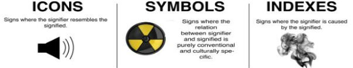

Reading Visual Art
By F. D. PERALTA
What is Visual Literacy?
Visual Literacy is the ability to decode and interpret visual messages and to encode and compose meaningful visual communications (Metros, 2008).
Visual literacy encompasses several key abilities:
- Visualize internally
- Communicate visually
- Read and interpret visual images
Visual Literacy is a set of abilities that enables an individual to effectively find, interpret, evaluate, use, and create images and visual media (Association of College and Research Libraries, 2011).
It includes skills that equip a learner to understand and analyze the contextual, cultural, ethical, aesthetic, intellectual, and technical components involved in the production and use of visual materials.
Viewing - The 5th Macroskill
A visually literate individual is both a critical consumer of visual media and a competent contributor to a shared knowledge and culture.
Critical and informed reading (thinking) of visual texts.
Visual literacy involves a critical and informed reading (thinking) of visual texts through various skills:
- Find image
- Interpret & analyze image
- Evaluate image
- Define image need
- Use images effectively
- Use images ethically & cite
- Create visual media
Hattwig, Bussert, Medaille, & Burgess (2013)
Visual and Cultural Texts
They can:
- Sell a product – Visual communication is often used in marketing.
- Sell an idea – Persuasion through imagery and media.
- Represent reality, culture – Visual media reflects and shapes cultural identity.
- Influence to a decision – Can persuade people's choices, whether in politics, purchasing, or beliefs.
THE WORLD IS A TEXT
- We are born readers.
- We make sense of everything by drawing conclusions based on our experiences.
- We construct a worldview based on these readings and the readings of other people.
- We influence other people's readings and they influence ours.
- As we become more adept at reading our world, we constantly rewrite our worldview.
- The world is open to interpretation—we can make meaning out of just about anything.
HIGHER LEVEL QUESTIONS FOR CRITICAL READING AND ANALYSIS
WHO | ISSUES | INFORMATION | PERSUATION | ASSUMPTIONS
WHO
- What people are depicted in the image? Whose culture or experiences is being shown?
- Who created the image and for what purpose?
- Who is the intended audience for the image?
- Whose point-of-view does the image take?
ISSUES
- What issues are being shown in the image?
- How is the way the issue is shown in the image similar to or different from how you see this issue in the world?
- What might this image mean to someone who see it?
- What is the message of the image?
INFORMATION
- Where does the information in the image come from?
- What information has been included and what has been left out?
- What proportion of the image could be inaccurate?
- What information presented is factual/manipulated/framed?
- What is the relationship between the image and the text?
- What impact does the size of images within the photo have?
PERSUASION
- Why has a certain media been chosen?
- Why was a particular image chosen?
- Why was the image arranged that way?
- Is the information contained in the image factual?
- What rhetorical appeals have been used? How are they achieved?
- What devices have been used to get the message across to the viewer?
- How has the message been affected by what has been left out or is not shown?
ASSUMPTIONS
- What attitudes are assumed?
- Whose voice is heard?
- Whose voice is not heard?
- What experiences or points of view are assumed?
VISUAL RHETORIC
Visual Rhetoric is the study of how images, design, and visual elements communicate messages and persuade audiences.
It involves analyzing how visuals function as a form of argument, much like written or spoken language.
Visual rhetoric is widely used in advertisements, political campaigns, social media, art, branding, and everyday communication.
It helps us understand how visuals influence emotions, shape perceptions, and reinforce cultural narratives.
READING PRINTED ADVERTS
Using the Social Semiotics Approach
Social Semiotic Theory (Michael Halliday) explores how communication systems, including language and other semiotic resources, are used to convey meaning within specific social contexts.
A framework for understanding communication as a socially embedded and multimodal phenomenon, emphasizing the role of context, semiotic resources, social practices, ideology, and power in the construction of meaning within different communities and cultures.
In social semiotics theory it is assumed that:
- Signs are always newly made in social interaction
- Signs are motivated; not arbitrary relations of meaning and form
- All signs are metaphors
Visual Social Semiotic extends the principles of social semiotics to the analysis of visual communication. This approach focuses on how visual elements, such as images, graphics, and spatial arrangements, contribute to the construction of meaning in a social context.
SEMIOTICS
Semiotics is the study of signs (from Greek semeiotikos σημειωτικός "a sign, a mark").
Semiotics as a field of study was founded based on the research of Saussure and Peirce, who each postulated it as the study of signs in their own distinct way.
Ferdinand de Saussure called it Semiology
Charles Sanders Peirce called it Semiotics
Saussure claimed a sign to be a dyadic entity—consisting of the signifier and the signified, and the arbitrary relationship between them; while Peirce had a three-fold approach of “something that stands for something, to someone in some capacity."
SAUSSURE'S SEMIOTIC CONCEPTS
Key semiotic concepts introduced by Ferdinand de Saussure include the signifier-signified relationship and the distinction between connotation and denotation, and syntagm and paradigm
Signifier and Signified
- Signifier: Any motion, gesture, image, sound, pattern, or event that conveys meaning.
- Signified: The concept or meaning that the signifier represents.
- The word "Rose" or an image of a rose (signifier)
- The idea or concept of a rose (signified)
Connotation vs. Denotation
- Denotation: The literal or primary meaning of a word or object.
- Example: A rose is a type of flower with red petals.
- Connotation: The feelings, ideas, or cultural meanings associated with the word or object.
- Example: A rose might symbolize love, romance, passion, or beauty in different cultures.
SYNTAGM AND PARADIGM
Syntagm: A single word or element of design that, when altered, can change the overall meaning.
Paradigm: A group or related ideas that are interchangeable in a sentence or design, yet they still have the same collective meaning.
Understanding Syntagm and Paradigm
Syntagm (Horizontal Relationship)
- A sequence of elements (e.g., words in a sentence, design elements in a visual composition).
- Changing one element in the structure alters the overall meaning.
- In the sentence, "The man ___ into the house," replacing the missing word (walked, stormed, ran, etc.) changes the sentence's meaning.
Paradigm (Vertical Relationship)
- A set of interchangeable elements that can be swapped while maintaining a general meaning.
- The words walked, stormed, ran, jumped, crashed, and broke form a paradigm set—they are different verbs that fit into the sentence while altering its tone, all of which are part of the paradigm for describing how the man entered the house.
PEIRCE'S SEMIOTIC THEORY
Semiosis
According to Peirce's theory, Semiosis is the act of signifying - the transfer of meaning from one object to the other. The act of 'Meaning making'.
Semiotic Triangle
The semiotic triangle represents the relationship between:
- Referent (the actual thing being represented)
- Object (the thing itself)
- Interpretant (the meaning we derive)
It illustrates how meaning is constructed through signs, and how different signs connect to their meanings in distinct ways.
Types of Signs
Icons
Signs where the signifier resembles the signified.
Example: A volume icon (speaker symbol) resembles a real speaker.
Symbols
Signs where the relation between signifier and signified is purely conventional and culturally learned.
Example: A radiation warning symbol—it does not physically resemble radiation but is universally understood due to convention.
Indexes
Signs where the signifier is caused by the signified (has a direct connection).
Example: Smoke is an index of fire—it signals that fire exists.
READING VIDEO ADVERTISEMENTS
Using Multimodal Discourse Analysis (MDA)
Multimodality is the application of multiple literacies within one medium. Multiple literacies ("modes") contribute to an audience's understanding of a composition.
Example: Televised weather forecast
- Spoken language
- Written language
- Weather specific language
- Geography
- Symbols
Everything from the placement of images to the organization of the content to the method of delivery creates meaning. This is the result of a shift from isolated text being relied on as the primary source of communication, to the image being utilized more frequently in the digital age.
Multimodal discourse analysis
Multimodal discourse analysis (MDA) extends the study of language per se to the study of language in combination with other resources, such as images, scientific symbolism, gesture, action, music and sound.
Semiotic Resource
"Semiotic Resource" describes the resources (or modes--- language, image, music, gesture and architecture), which integrate across sensory modalities---visual, auditory, tactile, olfactory, gustatory, kinesthetic) in multimodal texts, discourses and events, collectively called multimodal phenomena.